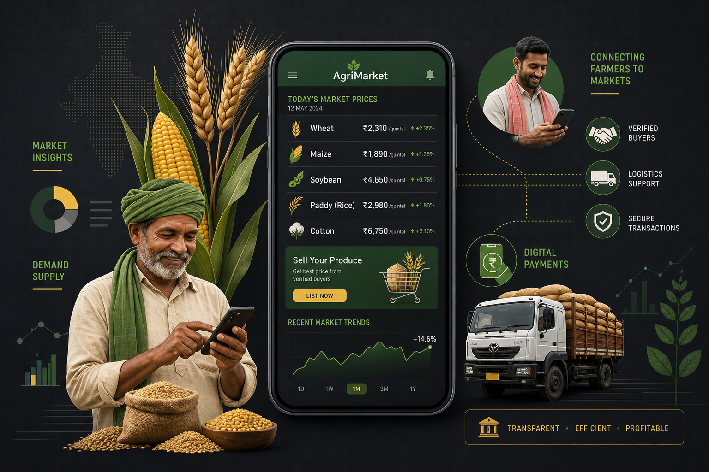

“Someone had to bring sanity to the agricultural market in Nigeria.”
That's how Deina Mayaki, co-founder and CEO of Agriarche, describes the moment he decided to build a technology company in one of the world's most fragmented — and most important — industries. Agriculture employs roughly 35% of Nigeria's workforce and contributes about 25% of GDP. Yet the sector's supply chain infrastructure operates largely the way it did decades ago: opaque, middleman-heavy, and profoundly inefficient.
Agriarche is trying to change that. And the numbers suggest it's working.
The Problem: A Broken Value Chain
Nigeria produces enormous volumes of agricultural commodities — rice, maize, sorghum, sesame, soybeans — but the journey from farm to market is defined by information gaps, price manipulation, and excessive intermediaries. A farmer in Borno State growing rice has no reliable way to know what that rice is worth in Lagos, let alone how to reach a buyer there.
The consequences are devastating. Post-harvest losses in Nigeria range from 20% to 50% depending on the crop, according to the Food and Agriculture Organisation. Farmers routinely sell below market value because they lack access to price information and competing buyers. Aggregators — the middlemen who consolidate and distribute agricultural products — operate with limited transparency, creating additional friction and cost at every step.
Before founding Agriarche, Mayaki worked with a fintech company introducing financial products to rice farmers. That experience revealed a deeper problem: farmers didn't just need financing. They needed a functioning marketplace.
The Solution: Kasuwa
Kasuwa — which means “market” in Hausa — is Agriarche's core product. It's an online marketplace that connects buyers and sellers of agricultural commodities through a mobile app, providing farmers and aggregators with:
• Market access: Direct connections to a broader base of verified buyers, eliminating unnecessary intermediaries
• Real-time pricing: Live market prices from multiple locations across Nigeria, ending the information asymmetry that has historically disadvantaged smallholder farmers
• Trade facilitation: End-to-end transaction management, including payments and logistics coordination
• Trading history: A digital paper trail that enables farmers to build creditworthiness and access finance based on actual trading records
The app is available on Google Play and designed for mobile-first use — a critical design choice in a country where smartphone penetration is growing rapidly but desktop access remains limited in agricultural regions.
The Numbers

Since launch, Agriarche has achieved significant traction:
• 12,000+ farmers connected to the Kasuwa platform
• 800+ aggregators onboarded, primarily in Northeast Nigeria
• $7 million+ in trade facilitated through the platform
• Funded by Sahel Capital Partners, USAID/Mercy Corps, o2o network, and Rank Capital
The company's expansion into Northeast Nigeria — one of the country's most underserved regions due to the ongoing security crisis — was enabled through a partnership with Mercy Corps' Resilience and Recovery Accelerator (RRA). That collaboration extended the Kasuwa app's reach to last-mile farmers and aggregators while supplementing digital access with training in agricultural best practices and post-harvest storage technology.
Why Agriarche Matters at Cannes Season
While Agriarche hasn't publicly confirmed attendance at Cannes Lions 2026, the company represents exactly the kind of African innovation that deserves a global stage. Cannes Lions — increasingly focused on creativity's intersection with technology, sustainability, and social impact — is paying more attention to the startups that are solving real problems at scale.
Agriarche sits at the intersection of three of the most important trends in African tech:
Agritech as infrastructure: Agriculture remains Africa's largest employer, and digitising the sector's value chain is one of the continent's most consequential technology opportunities.
Financial inclusion through trade data: By creating digital trading records, Kasuwa enables farmers to access credit — a problem that has historically locked smallholder farmers out of the formal financial system.
Last-mile access: Operating in Northeast Nigeria, one of the hardest-to-reach markets on the continent, demonstrates a model for scaling technology in conflict-affected and underserved regions.
For brand marketers and investors at Cannes Lions 2026 looking beyond the usual suspects, Agriarche is a case study in how African startups are building real businesses that solve real problems — without the Silicon Valley playbook.
What's Next
Agriarche is positioning for further expansion across Nigeria's agricultural corridors, with plans to deepen logistics integration and expand commodity coverage on the Kasuwa platform. The company's investor base — which includes Sahel Capital Partners, one of West Africa's most respected agribusiness investors — signals confidence in the long-term play.
In a sector where “disruption” is often overused, Mayaki's language is deliberately understated: bring sanity. For 12,000 farmers and counting, that's not a pitch. It's a daily reality.
FAQ
What is Agriarche?
Agriarche is a Nigerian agritech startup that digitises agricultural commodity trading through its mobile platform, Kasuwa. The company connects farmers and aggregators directly to markets, real-time pricing, and trade finance.
What is the Kasuwa app?
Kasuwa (meaning “market” in Hausa) is Agriarche's mobile marketplace for agricultural commodities. It enables farmers to access verified buyers, real-time market prices, and trade facilitation services through their smartphones.
How many farmers does Agriarche serve?
As of 2026, Agriarche has connected over 12,000 farmers and 800+ aggregators to its platform, facilitating more than $7 million in agricultural trade.
Who funds Agriarche?
Agriarche's investors include Sahel Capital Partners, USAID/Mercy Corps, o2o network, and Rank Capital.
This article is part of Upside Journal's “Nigerian Tech at Cannes Lions 2026” series, profiling the startups and founders shaping Nigeria's technology landscape. Read more at theupsidejournal.com.